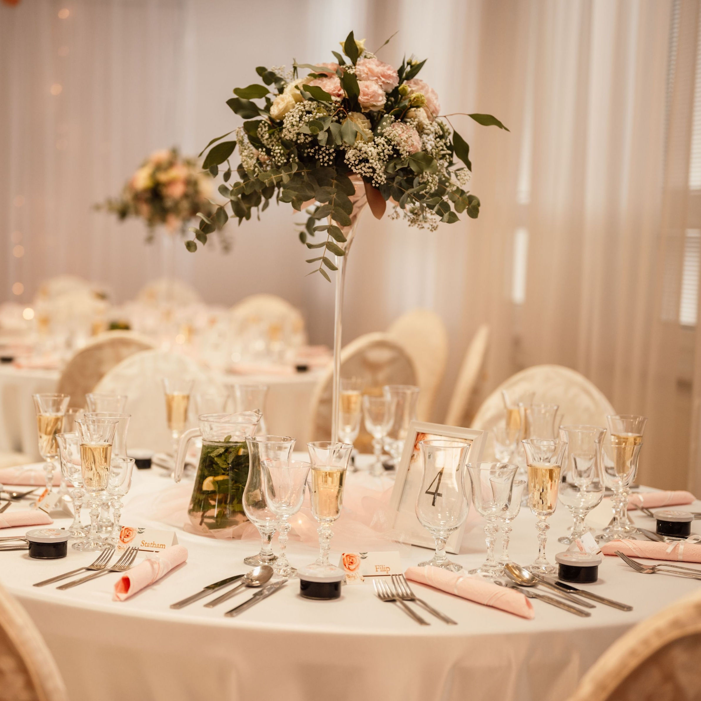

Welkom bij Bistro Amsterdam
introduction
Welkom bij Bistro Amsterdam
Bij Bistro Amsterdam draait alles om smaak, sfeer en
gastvrijheid.
Laat u verwennen met onze zorgvuldig samengestelde menu’s,
geïnspireerd door de rijke culinaire tradities van Europa.
Of u nu komt voor een romantisch diner, een zakelijke lunch of een
gezellige avond uit, wij bieden een warme en uitnodigende omgeving
voor elke gelegenheid.
Onze chef-koks gebruiken alleen de beste ingrediënten, met
aandacht voor detail, om gerechten te creëren die niet alleen
lekker zijn, maar ook een ware ervaring voor uw zintuigen.
Kom langs en ontdek waarom Bistro Amsterdam de perfecte plek is om
te genieten van een culinaire reis.